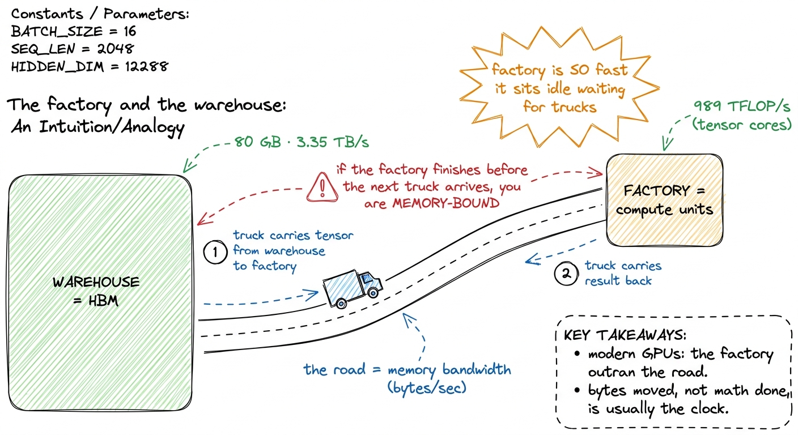
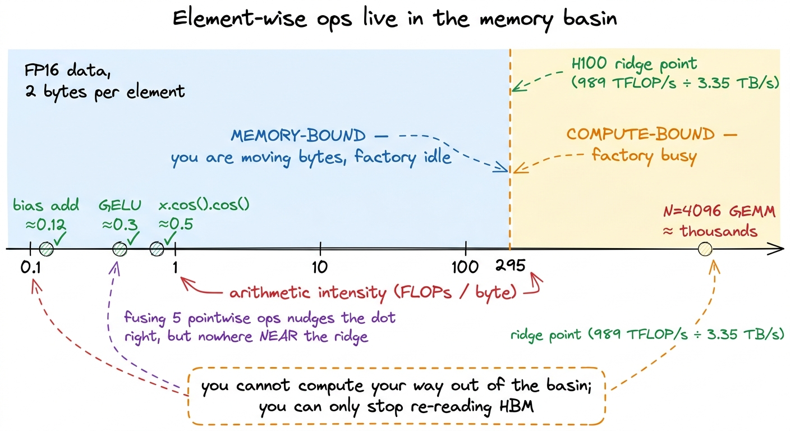
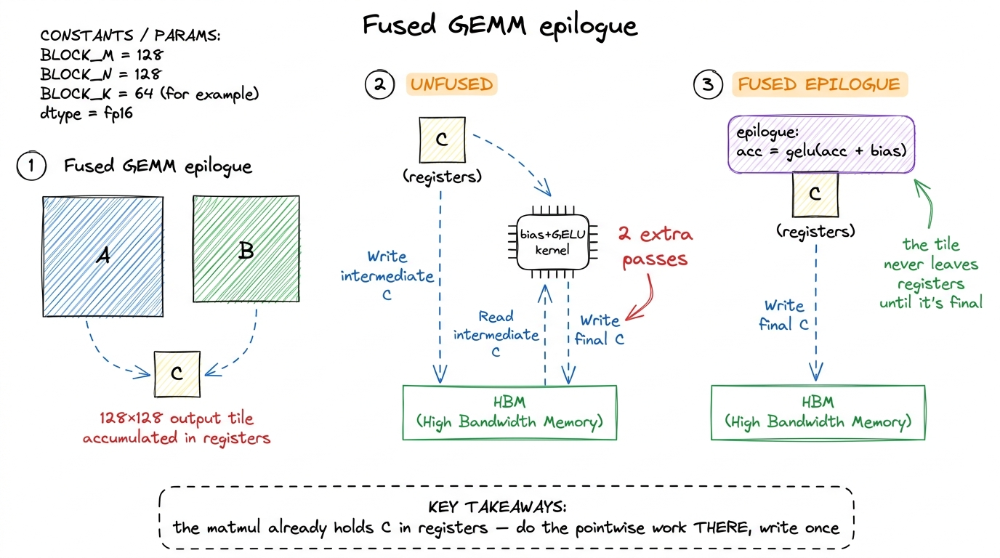

Operator fusion
If I had to name the single highest-leverage optimization in inference, it would not be a clever tensor-core trick or a lower precision. It would be this: stop writing activations to HBM only to read them straight back. Almost every network is a long chain of cheap element-wise operations sitting between the expensive matmuls — a bias add, a GELU, a residual add, a normalization — and the naive way to run them is one kernel per op, each one round-tripping the entire activation tensor through global memory. That round-trip is the whole cost. Fuse the chain into a single kernel and you often get a clean 2× or more for free, having changed no math at all.
This article is about why that works, where it applies, and how to see the win before you write a line of code. If you have read the three regimes, you already have the frame: element-wise ops are hopelessly memory-bound, and fusion is the lever that memory-bound kernels are begging for.1 The argument here is a direct rebuild of Horace He's "Making Deep Learning Go Brrrr From First Principles". The x.cos().cos() example and the factory/warehouse framing are his; the H100 arithmetic and figures are ours.
The problem: activations commute to HBM and back
Picture the simplest possible chain. You have an activation tensor x and you want y = gelu(bias + x). Written as two library calls — one add, one GELU — the GPU does the following. Kernel one launches, reads the whole tensor from HBM, adds the bias, and writes the whole tensor back to HBM. Kernel two launches, reads that same tensor back from HBM, applies GELU, and writes it out again.
Count the global-memory traffic. For an M × N activation that is four full passes over the tensor: read, write, read, write. Two of them — the write at the end of kernel one and the read at the start of kernel two — exist only because the two ops live in separate kernels. The intermediate tensor never needed to be seen by anyone but the next op. We paid to store it in the slowest memory on the chip and then immediately paid again to fetch it.

figure rendering · The unfused chain pays for the intermediate tensor twice; fusion deletThe picture above is the entire idea. Fusion means: read the inputs once, do all the element-wise work while the data is sitting in registers, and write the final result once. The intermediate bias + x is produced and consumed inside a register, never touching HBM. Horace He puts it exactly right — "instead of writing our data to global memory just to read it again, we elide the extra memory accesses by performing several computations at once."
Why this is a bandwidth win and nothing else
Here is the part that trips people up: fusion does not save you any arithmetic. The fused kernel does the same adds and the same GELU transcendentals as the two unfused kernels. What it saves is bytes moved. And for element-wise ops, bytes moved is the only thing that ever mattered.
Recall the ridge point from the three regimes. An H100 does about 989 TFLOP/s of BF16 through its tensor cores but only pulls about 3.35 TB/s from HBM3, so it wants roughly 295 FLOPs per byte before compute becomes the bottleneck.2 Element-wise ops don't even touch the tensor cores — they run on the CUDA cores, whose FP32 peak is lower. But the conclusion is identical and if anything stronger: the arithmetic intensity of a pointwise op is so far below any ridge that which peak you divide by is irrelevant. A pointwise op is nowhere near that. Adding a bias is one FLOP per element and moves at least 8 bytes per element (a 4-byte read and a 4-byte write in FP32): an arithmetic intensity around 0.1. That is thousands of times below the ridge. The op is pure memory movement with a rounding error of compute stapled on.
Which leads to the number that should reframe how you think about these kernels. He estimates that on an A100 "until you're doing about a hundred operations in your unary operator, you'll be spending more time performing memory accesses than actual compute." The H100's compute-to-bandwidth ratio is even more lopsided, so the threshold is higher, not lower. The practical consequence is startling:
A fusedx.cos().cos()takes nearly the exact same wall-clock time asx.cos()by itself.
Both read the tensor once and write it once; the second cosine is essentially free because it happens in a register the data already occupies. This is also why every activation function costs about the same — gelu "obviously consists of many more operations than relu," yet they benchmark identically, because neither is limited by its arithmetic. They are both limited by the two HBM passes that bracket them.

figure rendering · Fusing pointwise ops keeps you memory-bound — the win is halving the bNotice what the second figure is telling you. Fusing five pointwise ops into one kernel does raise the arithmetic intensity — you now do five FLOPs per byte instead of one — but you are still hundreds of times below the ridge. You never become compute-bound. The reason fusion is fast is not that it makes the kernel efficient in the roofline sense; it is that it reduces the total bytes the memory-bound kernel has to move, from 2k passes for k unfused ops down to a single read and a single write.
Fused epilogues: gluing pointwise work onto the matmul
The most valuable fusion in a transformer is not two pointwise ops together — it is welding the pointwise chain onto the matmul that produced the data. This is the fused epilogue, and it is why libraries like cuBLASLt and CUTLASS expose an "epilogue" hook at all.
Think about what a GEMM already does. A tiled matmul (see the GEMM ladder) accumulates each output tile in registers, and the very last thing it does is write that tile from registers back to HBM. That write is unavoidable — the result has to land somewhere. But an unfused linear layer then immediately launches a separate bias-add kernel that reads the result back, adds the bias, and writes it again. You just paid two extra HBM passes to add a bias, when the matmul kernel had the output sitting in registers, one instruction away from being able to add the bias for free.

figure rendering · A fused epilogue does the bias and activation while the output tile isThe epilogue runs in the window between "tile finished accumulating" and "tile written to HBM." Whatever pointwise transform you can express — acc = gelu(acc + bias), a scale, a clamp, a residual add, a cast to FP8 — you fold into that window. The output tile is written to HBM exactly once, already in its final form. In pseudo-CUDA the change is almost nothing:
// after the k-loop, `acc[i][j]` holds the C tile in registers.
#pragma unroll
for (int i = 0; i < TM; ++i)
for (int j = 0; j < TN; ++j) {
float v = acc[i][j] + bias[col + j]; // fused bias
v = gelu(v); // fused activation
C[(row + i) * N + col + j] = v; // the ONE write we were going to do anyway
}There is no extra kernel launch, no intermediate tensor, no second read. In PyTorch you would express the same thing by letting torch.compile (or a hand-written Triton kernel) capture the linear -> bias -> gelu subgraph; the compiler's whole job here is to recognize the chain and emit one kernel with the epilogue baked in.3 This is also why F.linear(x, w, bias) can be faster than F.linear(x, w) + bias: the former lets the library fuse the bias into the GEMM epilogue, while the latter may materialize the biasless result to HBM first. "May," because a good compiler will fuse it anyway — but you should not rely on it noticing.
RMSNorm before a matmul: the read-side fusion
Epilogues fuse pointwise work onto the output of a matmul. The mirror-image trick fuses it onto the input. Take the LLaMA-style block, where every matmul is preceded by an RMSNorm. Unfused, that is: a reduction kernel to compute the row's mean-square, a pointwise kernel to normalize and scale (read x, write x_norm), and then the GEMM reads x_norm back in. The normalized activation x_norm is written to HBM by the norm kernel and read from HBM by the GEMM — one more pointless round-trip of the entire activation.
The read-side fusion folds the normalization into the GEMM's loading stage. When the matmul kernel streams a tile of the input into shared memory (again, the shared-memory step of the ladder), it applies the RMSNorm scale on the way in, before the data ever hits the tensor cores. x_norm is never materialized in HBM at all; it exists only transiently in shared memory and registers.4 RMSNorm needs a full-row reduction (the mean of squares) before it can scale any element, so the cleanest version computes the per-row statistic in a tiny preceding pass and fuses only the scale into the GEMM load. The heavy activation tensor still avoids its round-trip; only a vector of per-row scalars crosses HBM. Between the fused-in RMSNorm on the read side and the fused-out bias-and-activation on the write side, an entire transformer sub-block can collapse from five or six kernels down to essentially "one GEMM with decorations."
How to see the win before you write it
The discipline is the same predict-then-measure loop as the rest of the site. Before fusing anything, count the passes. Write down how many times each byte of your activation crosses HBM in the unfused version, then how many times it would cross in the fused version, and the ratio of those two counts is your expected speedup — because the kernel is memory-bound, wall-clock time is very nearly linear in bytes moved. A linear -> bias -> gelu -> dropout chain is four kernels and roughly eight HBM passes over the activation; fused into one GEMM-with-epilogue it is closer to two. You should predict something near 4× on the pointwise portion and then confirm it in Nsight Compute, where the memory chart should drop from saturated to a fraction of DRAM throughput.
When your measured speedup matches the pass-count ratio, you understand the kernel. When it falls short, you have found something worth knowing — a tensor that was already in L2, a launch you didn't account for, an op the compiler refused to fuse. That gap is the interesting part.
Fusion is the first tool because it is the one that keeps paying as hardware moves. Every generation, compute grows faster than bandwidth, the ridge point climbs, and more of the network falls into the memory-bound basin where fusion lives. The next articles push on the two sides this one opened: the write side leads into quantized epilogues (fusing the cast to FP8 into the GEMM so you move half the bytes downstream), and the read side leads into the big one — FlashAttention — which is nothing but this same "never materialize the intermediate in HBM" idea applied to the softmax(QKᵀ)V chain, where the intermediate you refuse to write is an N × N attention matrix.